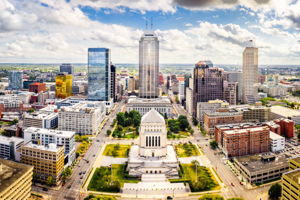

Indianapolis, Indiana
Indianapolis Information
This city has a population of around 888,000 people and is the capital of the state of Indiana.
To learn more about the city of Indianapolis, you can visit the Indianapolis Wikipedia page.
Indianapolis WikipediaThings I've Seen
Indiana State Museum
The Indiana State Museum is a wonderful location in downtown Indianapolis. It has several interesting exhibits including state history, ice age history, Indiana pioneer history, and African-American history. It is located in a string of other city attractions such as the Downtown Canal Walk, White River State Park, and the Indianapolis Zoo. The really interesting thing about this setup is that it allows visitors to park in a centralized parking lot and walk to the attraction of their choice. I would recommend using the underground parking. Parking and entry cost money.
To learn more about Indiana State Museum, you can visit them at their website linked below.
Indiana State Museum WebsiteDowntown Canal Walk
The Downtown Canal Walk is a brilliant canal that is used to connect many downtown Indianapolis attractions together. Attractions such as the Indiana State Museum, coffee shops, White River State Park, Military Park, and more. There are even apartments located on the canal. The canal is very long which provides a great opportunity for walking and running. There are also Swan Boats and kayaks available for rental. I would recommend using the underground parking. Parking costs money, but the walk is free.
White River State Park
White River State Park is a state park next to the White River that runs through downtown Indianapolis. It provides a wonderful open space and a place to gaze at the White River. I would recommend using the underground parking. Parking costs money.
To learn more about White River State Park, you can visit them at their website linked below.
White River State Park Official WebsiteSt. Elmo's Steakhouse
St. Elmo's Steakhouse is considered by most to be the best restaurant in Indiana. It is also the oldest steakhouse in the state of Indiana. Located in downtown Indianapolis in what I would describe as the food district. It is easily the best dining experience and food I have ever had. Definitely worth the price. When I visited Indianapolis, the city was putting on an event called Devour Indy. This event gave me access to a special sample menu and gave me the opportunity to try their signature dish and a spectacular filet mignon. Devour Indy seems to be a yearly event that takes place in Indianapolis during the later summer months. I would recommend using the underground parking. Parking costs money.
To learn more about St. Elmo's Steakhouse, you can visit them at their website linked below.
St. Elmo's Steakhouse Official WebpageWhite River
The White River is a river that runs through Indianapolis. In downtown Indianapolis there is a White River State Park that runs alongside it. I would recommend using the underground parking. Parking costs money.
To learn more about White River, you can visit the website linked below.
White River WebsiteThe Hangar: Handlebar Pedal Pub Tour
The Hangar is a bar that hosts the original Handlebar Pedal Pub Tour. This is a big multiple seat bicycle that allows bar patrons to drink, pedal, bar hop, and receive a tour of downtown Indianapolis. No need for concern, the bike has four wheels and is operated by a sober tour guide. It was a very fun experience and a truly Midwest way to learn a new city.
To learn more about The Hangar: Handlebar Pedal Pub Tour, you can visit them at their website linked below.
The Hangar Official WebsiteSoldiers & Sailors Monument
The Soldiers & Sailors Monument is a war monument in the center of downtown Indianapolis. It was built to honor the soldiers and sailors from Indiana who served in the American Revolutionary War, the conflicts that led to the War of 1812, the Mexican-American War, and the Spanish-American War. Since its construction it has become a symbol of Indianapolis, the capital of Indiana.
To learn more about the Soldiers & Sailors Monument, you can visit them at their website linked below.
Soldiers & Sailors Monument WebpageKOKO TEA
KOKO TEA is a boba tea shop located at the Soldiers & Sailors Monument. It's a good shop to pick up a drink for strolling around the plaza.
To learn more about KOKO TEA, you can visit them at their website linked below.
KOKO TEA Official WebsiteUSS Indianapolis National Memorial
The USS Indianapolis National Memorial is an impactful memorial dedicated to the story of the USS Indianapolis, a heavy cruiser that sailed in WWII. The memorial is dedicated to all of the lost sailors who were killed via the sinking of the ship, exposure to the open seas, and shark attacks. The memorial is located in the Downtown Channel Walk. I would recommend using the underground parking. Parking costs money.
To learn more about the USS Indianapolis National Memorial, you can visit them at their website linked below.
USS Indianapolis National Memorial WebpageDowntown Indianapolis
Downtown Indianapolis is the best downtown I have ever seen from a city. It is peaceful, clean, and fairly safe. Everything is close and the structure of Indianapolis's downtown is very organized, which I like a lot.